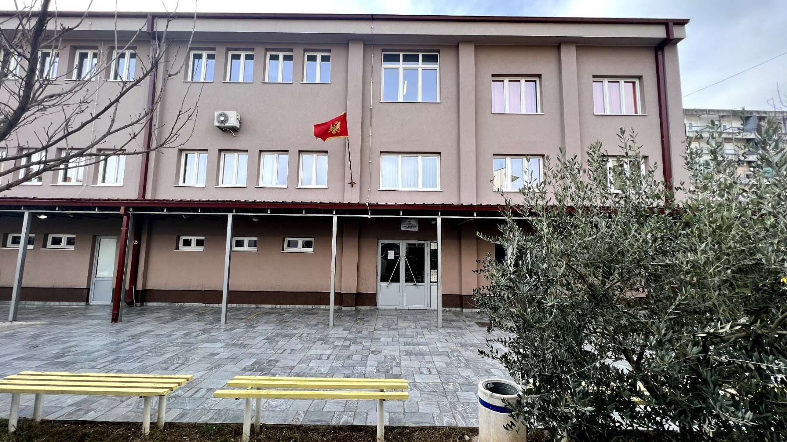

Elektrotehničar računara
Hardver, mreže, operativni sistemi i programiranje. Odavde se ide i na fakultet i pravo na posao.
- Trajanje 4 godine
- Odjeljenja 2
- Završetak stručna matura

Šest programa iz elektrotehnike, elektronike, energetike i telekomunikacija — sa praksom u pravim pogonima, a ne samo na papiru.
Četvorogodišnji vode ka diplomi tehničara i pravu na fakultet. Trogodišnji ka zanimanju s kojim se odmah radi.
Hardver, mreže, operativni sistemi i programiranje. Odavde se ide i na fakultet i pravo na posao.
Analogna i digitalna elektronika, mikrokontroleri, mjerenja i projektovanje uređaja.
Proizvodnja, prenos i distribucija struje, instalacije i mašine, obnovljivi izvori.
Prenos signala, optičke i bežične mreže, održavanje sistema, uz praksu kod operatera.
Izvođenje i održavanje instalacija u objektima, uz praksu kod poslodavaca.
Montaža, servis i popravka uređaja i mašina. Dio nastave ide kroz dualno obrazovanje.
Škola prati strategiju razvoja stručnog obrazovanja u Crnoj Gori — savremeni programi, radionice i obuke za nastavnike, i oprema koja prati ono što se stvarno traži na poslu.
Učenici i nastavnici izlaze na domaća i međunarodna takmičenja, a dio nastave se odvija kod poslodavaca — u pogonima, a ne u učionici.
Prije nego predaš prijavu, provjeri koliko poena nosiš.
Uspjeh iz VII, VIII i IX razreda plus rezultat eksterne provjere.
Izvod iz matične knjige, svjedočanstva i uvjerenje o završenoj osnovnoj.
U sekretarijatu škole ili elektronski, unutar upisnog roka.
Rang-lista ide na oglasnu tablu i na sajt, pa onda upis.
Tekuća obavještenja škola objavljuje u Moodle-u.
Praktična nastava i dualno obrazovanje, kroz projekte i preduzeća.
Saradnja zemalja Zapadnog Balkana i članica EU — zajedničke radne grupe, razvoj nastavnog plana i nove strategije stručnog obrazovanja.
Finansiranje opreme i infrastrukture, uz uključivanje preduzeća u obuku učenika.
Statut, pravilnici, javni pozivi i planovi — sve javno dostupno.
Svi dokumenti stoje u Moodle-u škole.
| Ustanova | JU Srednja elektrotehnička škola „Vaso Aligrudić“ |
|---|---|
| Adresa | Vasa Raičkovića 26, 81000 Podgorica |
| Telefon | 020 237 120 |
| E-pošta | skola@ets-pg.edu.me |
| Djelatnost | 8532 — srednje stručno i tehničko obrazovanje |
| Sekretarijat | Ponedjeljak — petak, 08.00—14.00 |